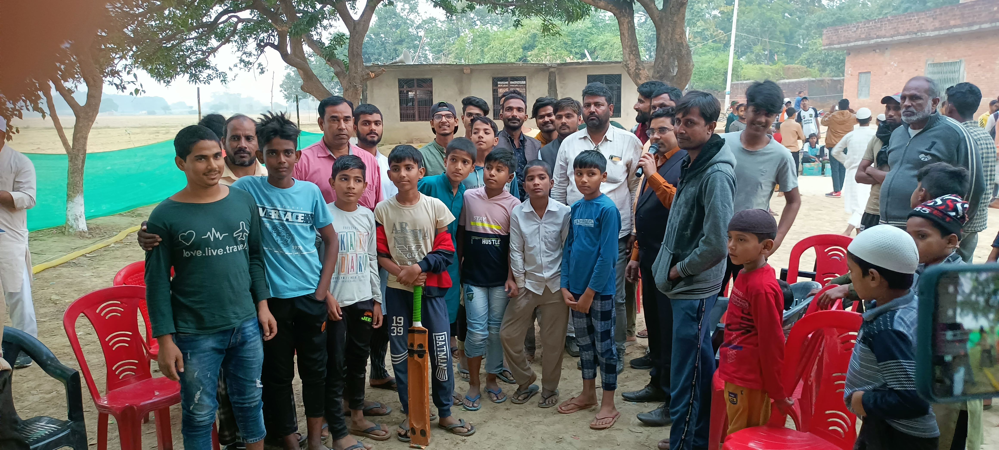
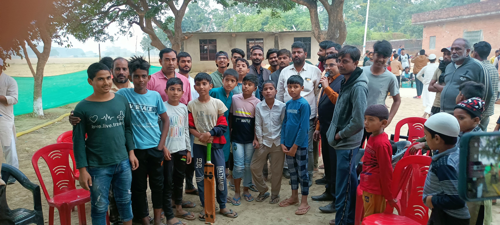
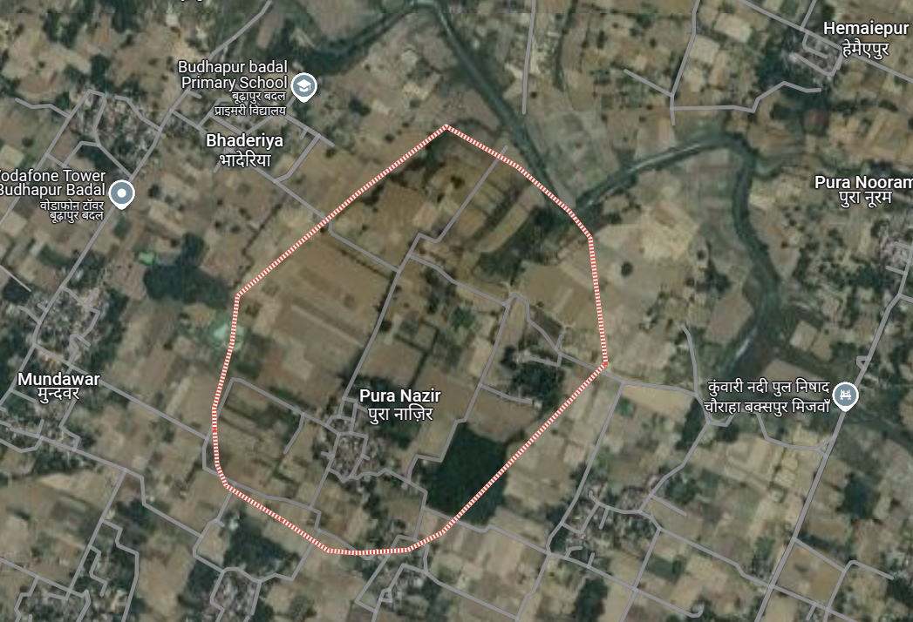

About PuraNazir
According to Census 2011, Pura Nazir is located in Phulpur Tehsil, Azamgarh District, Uttar Pradesh, India. The location code or village code of Pura Nazir village is 194936. The village lies 9 km away from the sub-district headquarter Phulpur and 56 km from the district headquarter Azamgarh. It comes under the Burhapur Badal Gram Panchayat.
Pura Nazir spans over an area of 22.27 hectares. The village has a total population of 304, with 128 males and 176 females. The literacy rate in Pura Nazir is 71.05%, with males at 71.09% and females at 71.02%. There are about 43 households in the village. The village pin code is 276304.
The nearest town for major economic activities is Phoolpur, located approximately 9 km away from Pura Nazir.
 


Village Overview
| Gram Panchayat | Burhapur Badal |
|---|---|
| Block / Tehsil | Phulpur |
| District | Azamgarh |
| State | Uttar Pradesh |
| Pincode | 276304 |
| Area | 22.27 hectares |
| Population | 304 |
| Households | 43 |
| Nearest Town | Phoolpur (6 km) |
Villages in Burhapur Badal Gram Panchayat
| Village |
|---|
| Puranazir |
| Burhapur Badal |
| Pura Malik |
| Pura Bhikari |
Map
Population Details
| Total Population | 304 |
|---|---|
| Male Population | 128 |
| Female Population | 176 |
| Literate Population | 216 |
| Illiterate Population | 88 |
Connectivity
| Public Bus Service | Available within 5 - 10 km distance (Phoolpur nearest) |
|---|---|
| Private Bus Service | Available within 5 - 10 km distance (Phoolpur nearest) |
| Railway Station | Available within 5 - 10 km distance (Khorason Road Station nearest) |
Nearby Villages
| Village |
|---|
| Pura Hasim |
| Math Santosi |
| Chak Chandan |
| Mudwar |
| Hemaiepur |
| Pura Nooram |
| Pura Malik |
| Pura Bhikari |
| Anjan Sahid |
| Daridih |
| Rampur Khurd |